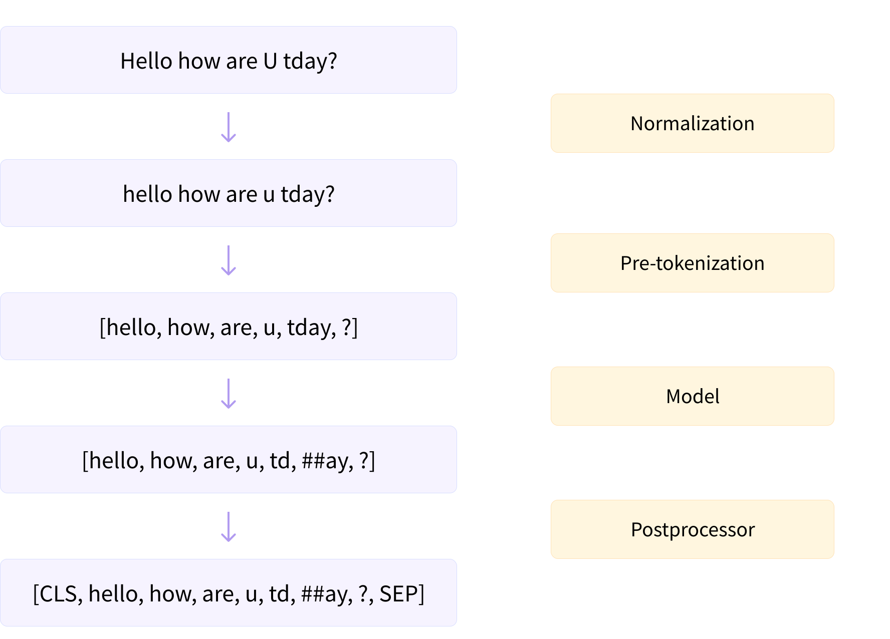

NLP课程（六-下）- 逐块构建分词器
转载自：https://huggingface.co/learn/nlp-course/zh-CN/
原中文文档有很多地方翻译的太敷衍了，因此才有此系列文章。
NLP课程（六-下）- 逐块构建分词器
逐块构建分词器
正如我们在前面几节中所看到的，标记化包括几个步骤：
- 规范化（任何认为必要的文本清理，例如删除空格或重音符号、Unicode 规范化等）
- 预标记化（将输入分割为单词）
- 通过模型运行输入（使用预先标记化的单词来生成标记序列）
- 后处理（添加分词器的特殊标记，生成注意掩码和标记类型 ID）
示例：

Tokenizers 库的构建是为了为每个步骤提供多个选项，您可以将它们混合和匹配在一起。在本节中，我们将了解如何从头开始构建分词器，而不是从旧分词器训练新的分词器。然后，您将能够构建您能想到的任何类型的标记器！
确地说，该库是围绕一个中心Tokenizer类构建的，其中的构建块在子模块中重新分组：
normalizers包含您可以使用的所有可能类型的Normalizer（完整列表请参见此处）。pre_tokenizers包含您可以使用的所有可能的PreTokenizer类型（完整列表请参见此处）。models包含您可以使用的各种类型的Model，例如BPE、WordPiece和Unigram（完整列表请参见此处）。trainers包含可用于在语料库上训练模型的所有不同类型的Trainer（每种类型的模型一个；完整列表请参见此处）。post_processors包含您可以使用的各种类型的PostProcessor（完整列表请参见此处）。decoders包含可用于解码标记化输出的各种类型的Decoder（完整列表见此处）。
您可以在此处找到构建块的完整列表。
1.获取语料库
为了训练我们的新分词器，我们将使用一个小的文本语料库（因此示例运行得很快）。获取语料库的步骤与我们在本章开头所采取的步骤类似，但这次我们将使用WikiText-2数据集：
1 | from datasets import load_dataset |
函数get_training_corpus()是一个生成器，它将生成 包含1,000 个文本的批次，我们将用它来训练分词器。
🤗 分词器也可以直接在文本文件上进行训练。以下是我们如何生成一个文本文件，其中包含我们可以在本地使用的 WikiText-2 中的所有文本/输入：
2
3
for i in range(len(dataset)):
f.write(dataset[i]["text"] + "\n")
接下来，我们将向您展示如何逐块构建您自己的 BERT、GPT-2 和 XLNet 分词器。这将为我们提供三种主要标记化算法的示例：WordPiece、BPE 和 Unigram。让我们从 BERT 开始吧！
2.从头构建WordPiece分词器
要使用 🤗 Tokenizers 库构建分词器，我们首先使用model实例化Tokenizer对象，然后将其normalizer 、 pre_tokenizer 、 post_processor和decoder属性设置为我们想要的值。
对于此示例，我们将使用 WordPiece 模型创建一个Tokenizer ：
1 | from tokenizers import ( |
我们必须指定unk_token ，以便模型知道在遇到以前从未见过的字符时返回什么。我们可以在此处设置的其他参数包括模型的vocab （我们将训练模型，因此不需要设置它）和max_input_chars_per_word ，它指定每个单词的最大长度（比传递的值长的单词）将会被分割）
标准化
normalizers库见https://huggingface.co/docs/tokenizers/api/normalizers
标记化的第一步是标准化，所以让我们从标准化开始。由于 BERT 被广泛使用，因此有一个BertNormalizer ，它具有我们可以为 BERT 设置的经典选项： lowercase（小写）和strip_accents（是否去除所有重音符号） ，这是不言自明的； clean_text删除所有控制字符并将重复空格替换为单个空格；和handle_chinese_chars ，它在中文字符周围放置空格。要复制bert-base-uncased分词器，我们只需设置此标准化器：
1 | tokenizer.normalizer = normalizers.BertNormalizer(lowercase=True) |
然而，一般来说，在构建新的分词器时，您将无法访问 🤗 Tokenizers 库中已经实现的方便的标准化器 - 所以让我们看看如何手动创建 BERT 标准化器。该库提供了Lowercase规范化器和StripAccents规范化器，您可以使用Sequence组合多个规范化器：
1 | tokenizer.normalizer = normalizers.Sequence( |
我们还使用NFD Unicode 规范化器，否则StripAccents规范化器将无法正确识别重音字符，因此不会将它们删除。
正如我们之前所看到的，我们可以使用normalizer的normalize_str()方法来检查它对给定文本的影响：
1 | print(tokenizer.normalizer.normalize_str("Héllò hôw are ü?")) |
更进一步如果您在包含 unicode 字符
u"\u0085"字符串上测试先前规范化器的两个版本，您肯定会注意到这两个规范化器并不完全相同。为了避免使用normalizers.Sequence使版本过于复杂，我们没有包含当clean_text参数设置为True时BertNormalizer所需的正则表达式替换 - 这是默认行为。但不用担心：通过在规范化序列中添加两个normalizers.Replace.Replace ，无需使用方便的BertNormalizer即可获得完全相同的规范化。
预标记化
pre_tokenizers库见https://huggingface.co/docs/tokenizers/api/pre-tokenizers
接下来是预标记化步骤。同样，我们可以使用一个预构建的BertPreTokenizer ：
1 | tokenizer.pre_tokenizer = pre_tokenizers.BertPreTokenizer() |
或者我们可以从头开始构建它：
1 | tokenizer.pre_tokenizer = pre_tokenizers.Whitespace() |
请注意， Whitespace预分词器会根据空格和所有非字母、数字或下划线字符的字符进行拆分，因此从技术上讲，它会根据空格和标点符号进行拆分：
1 | tokenizer.pre_tokenizer.pre_tokenize_str("Let's test my pre-tokenizer.") |
如果您只想按空格分割，则应该使用WhitespaceSplit预分词器：
1 | pre_tokenizer = pre_tokenizers.WhitespaceSplit() |
与规范化器一样，您可以使用Sequence来组成多个预标记器：
1 | pre_tokenizer = pre_tokenizers.Sequence( |
模型
Models库见https://huggingface.co/docs/tokenizers/api/models
trainers库见https://huggingface.co/docs/tokenizers/api/trainers#trainers
标记化管道的下一步是通过模型运行输入。我们已经在初始化中指定了模型，但我们仍然需要训练它，这将需要WordPieceTrainer 。在 🤗 Tokenizers 中实例化训练器时要记住的主要事情是，您需要将您打算使用的所有特殊标记传递给它 - 否则它不会将它们添加到词汇表中，因为它们不在训练语料库中：
1 | special_tokens = ["[UNK]", "[PAD]", "[CLS]", "[SEP]", "[MASK]"] |
除了指定vocab_size和special_tokens之外，我们还可以设置min_frequency （标记对应具有的最小频率才能合并）或更改continuing_subword_prefix （如果我们想使用与##不同的前缀）。
要使用我们之前定义的迭代器来训练我们的模型，我们只需执行以下命令：
1 | tokenizer.train_from_iterator(get_training_corpus(), trainer=trainer) |
我们还可以使用文本文件来训练我们的分词器，如下所示（我们事先使用空WordPiece重新初始化模型）：
1 | tokenizer.model = models.WordPiece(unk_token="[UNK]") |
在这两种情况下，我们都可以通过调用encode()方法来测试文本上的分词器：
1 | encoding = tokenizer.encode("Let's test this tokenizer.") |
获得的encoding是Encoding ，它在其各种属性中包含分词器的所有必要输出： ids 、 type_ids 、 tokens 、 offsets 、 attention_mask 、 special_tokens_mask和overflowing 。
后处理
Post-processors库见https://huggingface.co/docs/tokenizers/api/post-processors#tokenizers.processors.
标记化管道的最后一步是后处理。我们需要在开头添加[CLS]标记，在末尾添加[SEP]标记（或者在每个句子之后，如果我们有一对句子）。为此，我们将使用TemplateProcessor ，但首先我们需要知道词汇表中[CLS]和[SEP]标记的 ID：
1 | cls_token_id = tokenizer.token_to_id("[CLS]") |
要为TemplateProcessor编写模板，我们必须指定如何处理单个句子和一对句子。对于两者，我们编写我们想要使用的特殊标记；第一个（或单个）句子由$A表示，而第二个句子（如果编码一对）由$B表示。对于其中的每一个（特殊标记和句子），我们还在冒号后指定相应的标记类型 ID。
经典的 BERT 模板定义如下：
1 | tokenizer.post_processor = processors.TemplateProcessing( |
请注意，我们需要传递特殊标记的 ID，以便标记生成器可以正确地将它们转换为其 ID。
添加后，回到我们之前的示例将给出：
1 | encoding = tokenizer.encode("Let's test this tokenizer.") |
于一对句子，我们得到正确的结果：
1 | encoding = tokenizer.encode("Let's test this tokenizer...", "on a pair of sentences.") |
我们几乎已经从头开始构建了这个分词器——最后一步是包含一个解码器：
1 | tokenizer.decoder = decoders.WordPiece(prefix="##") |
让我们用之前的encoding来测试一下：
1 | tokenizer.decode(encoding.ids) |
伟大的！我们可以将标记生成器保存在单个 JSON 文件中，如下所示：
1 | tokenizer.save("tokenizer.json") |
然后我们可以使用from_file()方法在Tokenizer对象中重新加载该文件：
1 | new_tokenizer = Tokenizer.from_file("tokenizer.json") |
要在 🤗 Transformers 中使用此分词器，我们必须将其包装在
PreTrainedTokenizerFast中。我们可以使用通用类，或者如果我们的分词器对应于现有模型，则使用该类（此处为BertTokenizerFast）。如果您应用本课程来构建全新的分词器，则必须使用第一个选项。
要将分词器包装在PreTrainedTokenizerFast中，我们可以传递我们构建为tokenizer_object的分词器，或者传递我们保存为tokenizer_file的分词器文件。要记住的关键是我们必须手动设置所有特殊标记，因为该类无法从tokenizer对象推断哪个标记是掩码标记、 [CLS]标记等：
1 | from transformers import PreTrainedTokenizerFast |
如果您使用特定的标记生成器类（例如BertTokenizerFast ），则只需指定与默认标记不同的特殊标记（此处为无）：
1 | from transformers import BertTokenizerFast |
然后，您可以像任何其他 🤗 Transformers 分词器一样使用此分词器。您可以使用save_pretrained()方法保存它，或使用push_to_hub()方法将其上传到 Hub。
现在我们已经了解了如何构建 WordPiece 分词器，让我们对 BPE 分词器执行相同的操作。因为您知道所有步骤，所以我们会走得更快一些，并且只突出显示差异。
3.从头构建BPE分词器
现在让我们构建一个 GPT-2 分词器。与 BERT 分词器一样，我们首先使用 BPE 模型初始化Tokenizer ：
1 | tokenizer = Tokenizer(models.BPE()) |
与 BERT 一样，如果我们有词汇表的话，我们可以用词汇表来初始化这个模型（在这种情况下我们需要传递vocab并merges ），但由于我们将从头开始训练，所以我们不需要这样做。我们也不需要指定unk_token因为 GPT-2 使用字节级 BPE，这不需要它。
预标记化
GPT-2 不使用标准化器，因此我们跳过该步骤并直接进入预标记化：
1 | tokenizer.pre_tokenizer = pre_tokenizers.ByteLevel(add_prefix_space=False) |
我们在此处添加到ByteLevel的选项是不在句子开头添加空格（否则为默认值）。我们可以像之前一样看一下示例文本的预标记化：
1 | tokenizer.pre_tokenizer.pre_tokenize_str("Let's test pre-tokenization!") |
模型
接下来是模型，需要训练。对于 GPT-2，唯一的特殊标记是文本结束标记：
1 | trainer = trainers.BpeTrainer(vocab_size=25000, special_tokens=["<|endoftext|>"]) |
与WordPieceTrainer以及vocab_size和special_tokens一样，我们可以根据需要指定min_frequency ，或者如果我们有词尾后缀（如</w> ），我们可以使用end_of_word_suffix设置它。
该分词器还可以在文本文件上进行训练：
1 | tokenizer.model = models.BPE() |
让我们看一下示例文本的标记化：
1 | encoding = tokenizer.encode("Let's test this tokenizer.") |
后处理
我们对 GPT-2 分词器应用字节级后处理，如下所示：
1 | tokenizer.post_processor = processors.ByteLevel(trim_offsets=False) |
trim_offsets = False选项向后处理器指示我们应该保留以 ‘Ġ’ 开头的标记的偏移量：这样偏移量的开始将指向单词之前的空格，而不是第一个字符单词（因为空间在技术上是token的一部分）。让我们看一下我们刚刚编码的文本的结果，其中'Ġtest'是索引 4 处的标记：
1 | sentence = "Let's test this tokenizer." |
最后，我们添加一个字节级解码器：
1 | tokenizer.decoder = decoders.ByteLevel() |
我们可以仔细检查它是否正常工作：
1 | tokenizer.decode(encoding.ids) |
伟大的！现在我们已经完成了，我们可以像以前一样保存 tokenizer，如果我们想在 🤗 Transformers 中使用它，请将其包装在PreTrainedTokenizerFast或GPT2TokenizerFast中：
1 | from transformers import PreTrainedTokenizerFast |
or: 或者：
1 | from transformers import GPT2TokenizerFast |
4. 从头构建Unigram分词器
现在让我们构建一个 XLNet 分词器。与之前的分词器一样，我们首先使用 Unigram 模型初始化Tokenizer ：
1 | tokenizer = Tokenizer(models.Unigram()) |
同样，如果我们有词汇表的话，我们可以用词汇表来初始化这个模型。
标准化
对于标准化，XLNet 使用一些替换（来自 SentencePiece）：
1 | from tokenizers import Regex |
这会将“和”替换为” ，并将两个或多个空格的任何序列替换为单个空格，并删除要标记的文本中的重音符号。
预标记化
用于任何 SentencePiece 分词器的预分词器是Metaspace ：
1 | tokenizer.pre_tokenizer = pre_tokenizers.Metaspace() |
我们可以像之前一样看一下示例文本的预标记化：
1 | tokenizer.pre_tokenizer.pre_tokenize_str("Let's test the pre-tokenizer!") |
模型
接下来是模型，需要训练。 XLNet 有相当多的特殊令牌：
1 | special_tokens = ["<cls>", "<sep>", "<unk>", "<pad>", "<mask>", "<s>", "</s>"] |
对于UnigramTrainer来说，不要忘记的一个非常重要的参数是unk_token 。我们还可以传递特定于 Unigram 算法的其他参数，例如删除标记的每个步骤的shrinking_factor （默认为 0.75）或指定给定标记的最大长度的max_piece_length （默认为 16）。
该分词器还可以在文本文件上进行训练：
1 | tokenizer.model = models.Unigram() |
让我们看一下示例文本的标记化：
1 | encoding = tokenizer.encode("Let's test this tokenizer.") |
后处理
XLNet 的一个特点是它将<cls>标记放在句子末尾，类型 ID 为 2（以将其与其他标记区分开）。结果，它在左侧填充。我们可以使用模板处理所有特殊令牌和令牌类型 ID，就像 BERT 一样，但首先我们必须获取<cls>和<sep>令牌的 ID：
1 | cls_token_id = tokenizer.token_to_id("<cls>") |
模板如下所示：
1 | tokenizer.post_processor = processors.TemplateProcessing( |
我们可以通过编码一对句子来测试它的工作原理：
1 | encoding = tokenizer.encode("Let's test this tokenizer...", "on a pair of sentences!") |
最后，我们添加一个Metaspace解码器：我们就完成了这个分词器！我们可以像以前一样保存 tokenizer，如果我们想在 🤗 Transformer 中使用它，请将其包装在PreTrainedTokenizerFast或XLNetTokenizerFast中。使用PreTrainedTokenizerFast时需要注意的一件事是，在特殊标记之上，我们需要告诉 🤗 Transformers 库在左侧填充：
1 | from transformers import PreTrainedTokenizerFast |
Or alternatively: 或者：
1 | from transformers import XLNetTokenizerFast |
1 | tokenizer.decoder = decoders.Metaspace() |
我们就完成了这个分词器！我们可以像以前一样保存 tokenizer，如果我们想在 🤗 Transformer 中使用它，请将其包装在PreTrainedTokenizerFast或XLNetTokenizerFast中。使用PreTrainedTokenizerFast时需要注意的一件事是，在特殊标记之上，我们需要告诉 🤗 Transformers 库在左侧填充：
1 | from transformers import PreTrainedTokenizerFast |
Or alternatively: 或者：
1 | from transformers import XLNetTokenizerFast |